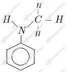
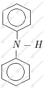

a) propylo-1-amina lub propano-1-amina
b) trimetyloamina
a)
b)

c)

d)
Równanie reakcji:
Wzór difenyloaminy (
Jest to zatem amina drugorzędowa .
Masa cząsteczkowa difenyloaminy:
Z treści zadania wiemy, że wchłonięciu uległo maksymalnie 6 𝝁g kadmu. Wiemy też, że wchłonięciu ulega maksymalnie 80% wdychanego kadmu. Liczymy ilość wdychanego kadmu:
Odpowiedź: Osoba ta w ciągu doby wdycha 7,5 𝝁g kadmu.